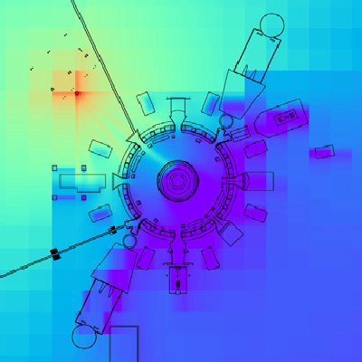

I am an R&D Staff Member in the High Performance Computing Methods for Nuclear
Applications group at Oak Ridge National Laboratory in Oak Ridge, Tennessee,
USA. I develop and implement computational methods for physics simulations on
leadership-class supercomputers. Research areas include radiation transport,
computational geometry, and fluid dynamics. I hold Bachelor's degrees in
chemical engineering and chemistry from the University of Minnesota, and a Ph.D.
in nuclear engineering from the University of Wisconsin.
E. Biondo, T. Evans, S. Johnson, S. Hamilton,
"Comparison of Nested Geometry Treatments within GPU-Based Monte
Carlo Neutron Transport Simulations of Fission Reactors,"
International Journal of High Performance Computing Applications, submitted March, 2024.
Published document |
Open-access manuscript
E. Biondo, G. Davidson, B. Ade,
"Layered CAD/CSG geometry for spatially complex radiation transport scenarios,"
Annals of Nuclear Energy, Vol. 181, 2023.
Published document |
Open-access manuscript

E. Biondo, T. Evans, G. Davidson, S. Hamilton,
"Singular Value Decomposition of Adjoint Flux Distributions for Monte Carlo Variance Reduction,"
Annals of Nuclear Energy, Vol. 141, 2020.
Published document |
Open-access manuscript
E. Biondo, P. Wilson,
“Transmutation Approximations for the Application of Hybrid Monte Carlo/Deterministic Neutron Transport to Shutdown Dose Rate Analysis,"
Nuclear Science and Engineering, Vol. 187, Issue 1, pp. 27-48, 2017.
Published document |
Open-access manuscript |
Full dissertation
E. Biondo, A. Davis, P. Wilson,
“Shutdown Dose Rate Analysis with CAD Geometry, Cartesian/Tetrahedral Mesh, and Advanced Variance Reduction,"
Fusion Engineering and Design, Vol. 106, pp. 77–84, 2016.
Published document |
Open-access manuscript